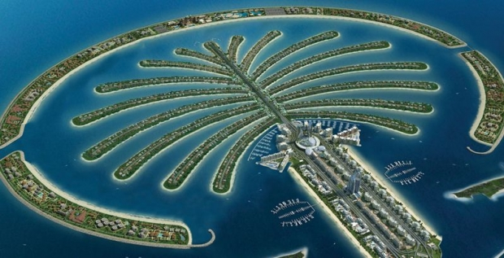

Palma Jumeyra — Dubay, Birlashgan Arab Amirliklari qirgʻogʻida joylashgan Palma Jumeyrah, Deyra oroli va Palma Jebel Ali kabi sunʼiy uchta orolning umumiy nomi. Palma orollari Dubaydagi asosiy sayyohlik maskanidir. Orollarning yaratilishi 2001-yilda boshlangan va 2006-yildan 2008-yilgacha davom etgan. Uning yaratilishi bu mintaqadagi okean choʻkindilari va yovvoyi tabiatga sezilarli taʼsir koʻrsatdi.
oldingisi  boshi